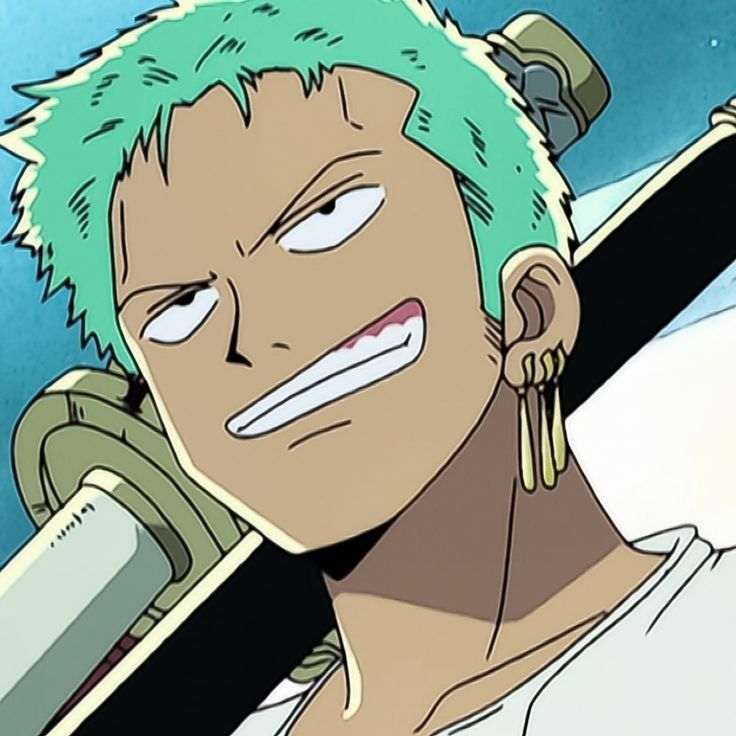
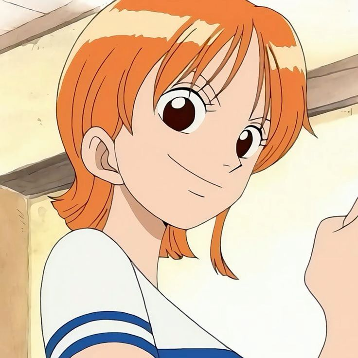
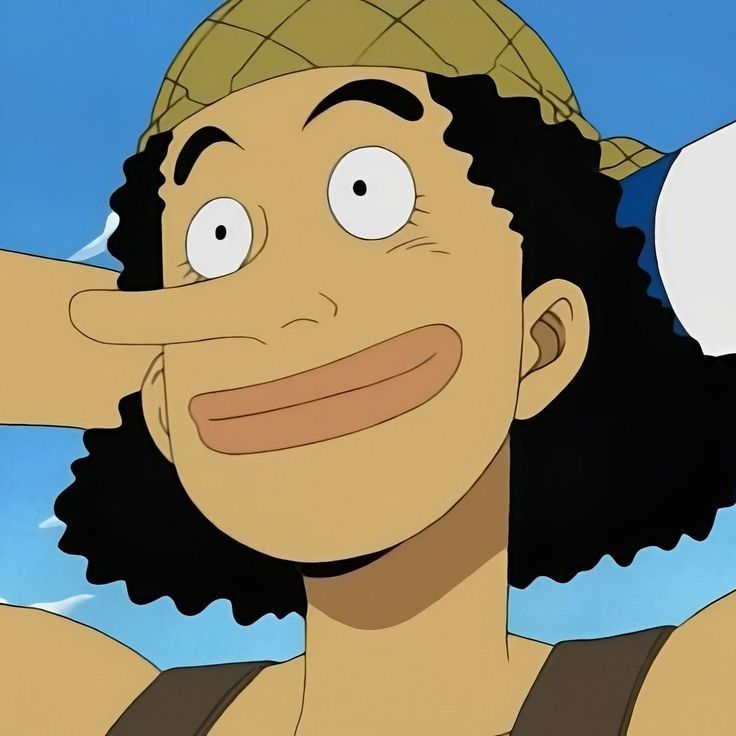
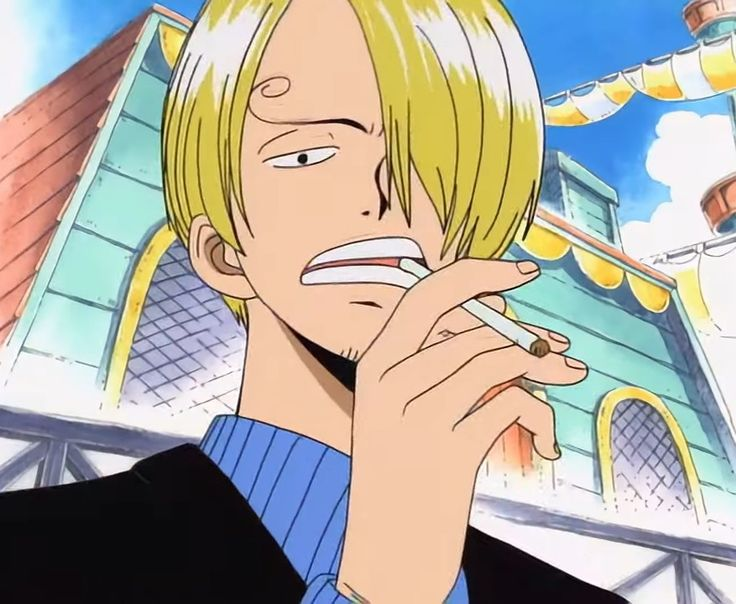

Characters
Monkey D. Luffy
Monkey D. Luffy is the main character of One Piece and captain of the Straw Hat Pirates.
He's a fun-loving individual with a big dream: to become the Pirate King. Thanks to eating the Gum-Gum Fruit, Luffy can stretch his body like rubber, which he uses to fight in some pretty wild ways. While he might seem goofy, Luffy's got a heart of gold and will do anything for his friends.
Roronoa Zoro

Roronoa Zoro is the first member to join Luffy's Crew and serves as the crew's swordsman.
Known for his unique three-sword style and green hair, Zoro dreams of becoming the world's greatest swordsman. He's incredibly strong and loyal, but he's also famous for his terrible sense of direction, which often leads to hilarious situations.
Nami

Nami is the skilled navigator of the Straw Hat Pirates in One Piece, known for her quick wit and money-loving nature.
Despite her tough exterior, Nami is deeply loyal to her crew and has a kind heart, especially towards children and those in need. Her dream is to draw a map of the entire world, showcasing her talents as a cartographer.
Usopp

Usopp is the sniper of the Straw Hat Pirates, known for his long nose and incredible marksmanship.
Despite being a notorious liar, he's good at creative problem-solving and often uses his quick wit and clever inventions to get out of tight spots. Usopp dreams of becoming a brave warrior of the sea, and while he might spin tall tales, he's fiercely loyal to his crew and steps up when it really counts. His dream is to become a brave warrior of the Seas.
Sanji

Sanji is the Straw Hat Pirates' chef and a master of kick-based fighting.
With his signature "Black Leg" style and a dream of finding the legendary All Blue, Sanji's a key player in Luffy's crew.